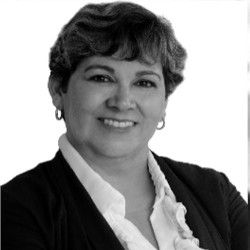

C. Martha Virginia Jasso Oyervides

Institución que la propone: Universidad Autónoma de Coahuila.
Lugar de Residencia: Saltillo, Coahuila de Zaragoza.
Formación Académica:
- Licenciada en Trabajo Social.
- Maestría en Desarrollo Social
- Doctorante en Ciencias Sociales.
Antecedentes Laborales:
- Trabajadora social y promotor comunitario del Programa Rescate en el Crucero en el Sistema para la atención Integral para la Familia del Municipio de Saltillo (1997-2000)
- Miembro del equipo interdisciplinario del Departamento de Atención a menores en DIF Saltillo (2000-2002)
- Catedrática de la Facultad de Trabajo Social (2000- a la fecha)
- Secretaria académica de la Facultad de Trabajo social (2012-2014)
- Directora de la Facultad de Trabajo Social (2014 - a la fecha)
- Dictaminadora de proyecto para INDESOL SEDESOL federal (2016- 2018)
- Dictaminadora de reactivos para el Centro Nacional de Evaluación (CENEVAL del 2012- a la fecha)
- Miembro del Comité académico de Trabajo social DEL Centro Nacional de Evaluación (Ceneval 2020l)
Otras Actividades Relevantes:
- Diplomados Cursos de docencia y actualización profesional a nivel nacional
- Participante en seminarios, congresos y encuentros académicos y de investigación.
- Asistencia cursos y congresos internacionales en USA.
- Doctorante en Ciencias Sociales
- Profesora de tiempo completo en programas de licenciatura y posgrado UAdeC,
- investigadora en temas relacionados con la vulnerabilidad de Niñas, Niños y Adolescente
- Representante de la Facultad en la Red Nacional de Instituciones y Escuelas de educación superior en Trabajo Social
- Conseja Universitaria maestra (2015-2019) UAdeC
- Consejera directiva ( 2015-2020) UAdeC
- Representante en la Asociación Nacional de instituciones y escuelas de Trabajo Social (2017-2020)
- Coordinadora de seminarios interinstitucionales
- Miembro de Núcleo académico básico de la Maestría en modelos de intervención social construccionista (2018-2020)
- Miembro del la comisión y coordinadora de la Evaluación, seguimiento y reforma curricular de la FTS (2014-2020)
- Miembro del comité de evaluación curricular para la acreditación de la Secretaría de Salud a nivel federal (2018)